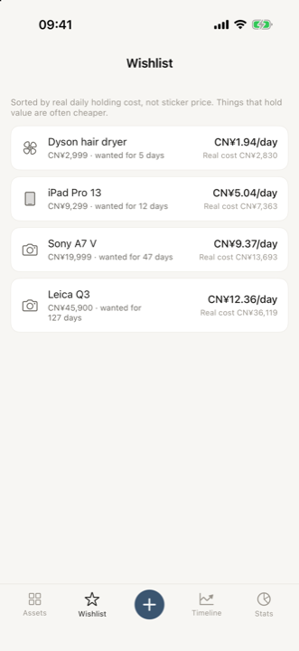
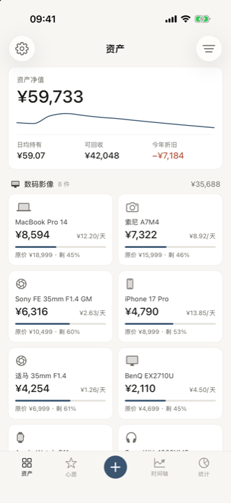
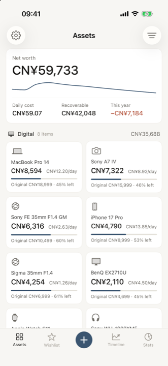
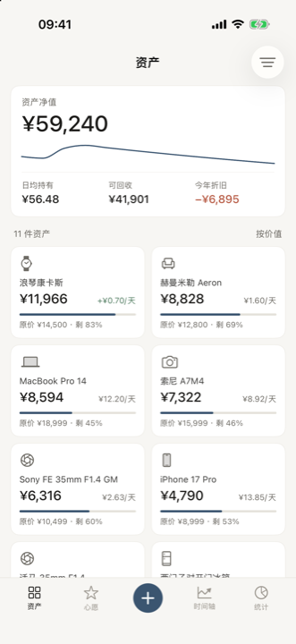

Cash and investments get tracked. The tens of thousands of pounds of things in your home never do — and they lose value every single day. Trove keeps that account.
现金和理财有人替你记账，家里那几十万的东西没有——而且它每天都在贬值。长物把这笔账记出来。





The number nobody shows you
没有人给你看过的那个数
−¥6,895
Your possessions lose thousands a year and no bank tells you. Trove puts that figure on the first screen, next to what you'd get back if you sold everything today.
你的东西一年贬掉几千块，没有任何一家银行会告诉你。长物把这个数字放在第一屏，旁边就是「今天全部出手能拿回多少」。
Before you buy
买之前
A lens at ¥45,900 and a gadget at ¥2,999 look nothing alike on a price tag. Hold each for a few years and the gap collapses, because one of them keeps its value and the other doesn't. The wishlist ranks by what things actually cost to own, not by what they cost to buy.
标价 ¥45,900 的镜头和 ¥2,999 的小家电，在价签上完全不是一个量级。各持有几年之后差距会大幅收窄——因为一个保值，一个不保值。心愿页按「真正的持有成本」排序，而不是按买入价。
Three fields
三个字段
Name, price, roughly when you bought it. The category comes from the name — you only pick one when it genuinely can't tell. Known models bring their own launch price, release date and depreciation curve with them.
名称、价格、大概什么时候买的。类型由名称推断，只有真推不出来时才需要你挑一次。认识的型号会自己带上发售价、发售日期和专属的折旧曲线。
Privacy
隐私
Everything you record is written to a single file inside the app's own container on your device. There is no cloud copy and no server behind the app, so the developer never receives your records. No analytics, no crash reporting, no advertising, no third-party libraries, and no permissions requested.
你记录的一切都写在设备上这个 app 自己的容器里的一个文件中。没有云端副本，app 背后也没有服务器，开发者拿不到你的记录。没有数据分析、没有崩溃上报、没有广告、没有第三方库，也不申请任何权限。
Two things do leave the device, both narrow: an unrecognised item name may be sent to Wikidata to suggest a category, and purchases go through Apple. Neither reaches the developer.
只有两样东西会离开设备，范围都很窄：认不出的物品名称可能被发给 Wikidata 用于推断品类，以及购买走苹果的通道。两者都到不了开发者手里。
They are model estimates, not appraisals. Curves come from typical second-hand behaviour per category, with specific curves for well-known models. If a number looks wrong, open the item and tap Calibrate — enter what it would actually sell for and the curve is refitted around that point while keeping the category's shape.
它们是模型估算，不是专业评估。曲线基于各品类在二手市场的典型表现，知名型号还有各自的单品曲线。如果哪个数字看着不对，打开那件物品点「校准」——填入它实际能卖多少，曲线会围绕这个点重新拟合，同时保留品类原有的形状。
Yes — pick the currency next to the price. The amount is locked into your main currency at the rate for the month you bought it, because what you actually spent is a historical fact and shouldn't drift. The item's current value follows today's rate instead. Main currency lives in Settings.
可以——在价格旁边选货币即可。这笔金额按你买入那个月份的汇率锁定到主货币，因为「当时花了多少」是历史事实，不该随汇率漂移。而这件物品的当前价值走的是今天的汇率。主货币在「设置」里改。
By category — digital, home, collectible, mobility, apparel — each group showing its own subtotal, sorted so the group holding the most value comes first. Within a group, items are sorted by current value. Clothing and shoes headline a per-day cost instead of a residual value, because the residual on a T-shirt is a meaningless number.
按大类分区——数码影像、家居家电、收藏保值、出行运动、衣着——每组带自己的小计，价值最高的组排在最前面。组内按当前价值排序。衣物和鞋履的主指标是日均成本而不是剩余价值，因为一件 T 恤的「残值」是个没有意义的数字。
The bundled catalogue covers common electronics, cameras, lenses and consoles. Anything unknown still works — it falls back to the category curve and you can calibrate it. Send the model name over and it gets added.
内置目录覆盖常见的数码、相机、镜头和游戏机。没收录的照样能用——会回落到品类曲线，也可以自己校准。把型号名发过来就能加进去。
They exist so the first screen isn't empty. The moment you record something of your own they all disappear on their own — or clear them straight away from Settings.
它们的存在只是为了让第一屏不至于是空的。你一记下自己的东西，它们就会整批自动消失——也可以在「设置」里直接清掉。
Trove follows your system language. To set a different one just for this app, use iOS Settings → Trove → Language, or the shortcut inside the app's own Settings screen.
长物跟随系统语言。想单独给这个 app 指定语言，去 iOS 的「设置 → 长物 → 语言」，或者用 app 设置页里的快捷入口。
Bugs, wrong launch prices, valuations that feel off, or a model you'd like added — all welcome.
Bug、发售价写错了、估值感觉不对、想加某个型号——都欢迎。
stonsy1999@gmail.comPlease mention your iOS version and the app version shown in Settings.
麻烦附上你的 iOS 版本，以及设置页里显示的 app 版本号。